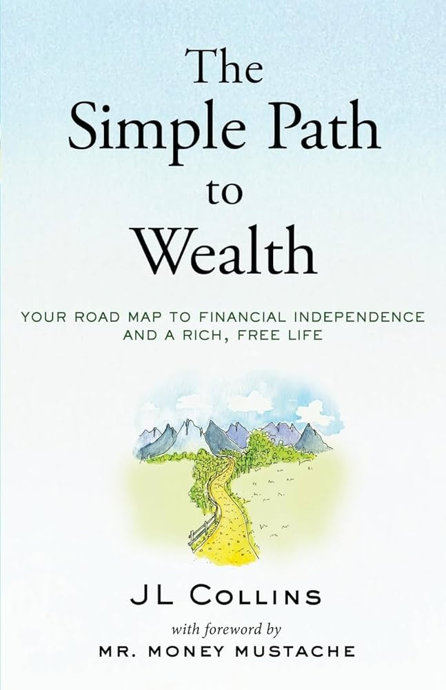

DATE: 2025-08-25
Intro to Investing
The FOMC meeting on 08/22/2025 released a statement explaining how monetary policy works and how they conclude to their decisions. In short, they concluded that the monetary policies set by them are decided to help ensure price stability and maximum employment. This is believed to be the 2% inflation mark. Additionally, there is a lag to monetary policy as effects of their decisions may not be seen until the next quarter at the earliest. Unemployment and prices are largely affected by financial disturbances in the market; morever, maximum employment can be largely determined by nonmonetery factors and/or other contributions that changes over time.
It’s said that the best time to invest was yesterday, and the second-best time to invest is right now.
As a 20-something-year-old who’s constantly thinking about his future and retirement, I am fearful of the limited supply of ability and money I’ll have. Having a cushion of support is why I started investing, and I’m breaking down the strategies on how I created my portfolio.
This guide is for beginners or passive traders who want to routinely deposit money into an account and forget about it until retirement.
There’s an industry built on advisors, managers, and brokers on how to handle personal finances and make sure you get the best return. Given that you are a multi-million-dollar business or somewhat affiliated with one, sure, otherwise I see no reason to spend money on advice that could go into your account.
If you haven't read “The Simple Path to Wealth” by Collins, I highly recommend it. He dispels myths around investing, how simple it is, and how it’s better to start right now. I will be summarizing and using my own experiences to guide you.
I imagine the people who read this are students, young 20-somethings, or anyone who is simply put off by the finance and crypto bros of social media and thinks it’s all a scam.
If you’re lucky, the company you work for offers a 401 (k)—the classic secured retirement plan. Amazing, you can stop here. If you’re smart, you would have an investment account, a ROTH IRA, and that 401k to spread out your money. That $1 sure can fly.
A ROTH IRA is a type of investment account that anyone can open as long as they have earned income. The biggest benefit is that it is tax-free, meaning that when you want to take it out, Uncle Sam won’t take a piece of that pie, given that it has been untouched for more than 5 years and you are 60 years old. This is the ideal account for retirees, and how you can become a millionaire by then.
An investment account, otherwise known as a brokerage account, is also a savings account, but taxable whenever you take money out. This is for your emergencies and paying off debt.
Imagine you’re working part-time in high school. You start at age 16 as a junior, working 12 hours a week, earning $16 an hour, and for 2 years. You have earned $19,968, divided by 2 to pay for whatever you want to spend your hard-earned money on. You have $9,984 leftover, all pre-taxed.

College tuition is $45k, you are given $15k in total for grants and scholarships, assuming middle-class. $9,984 barely covers tuition, and you take out loans. Meanwhile, while you are borrowing, you take that $9,984 and invest it into a safe portfolio that averages 12% growth per year.
($9,984) * (1.12)^4 = $11,680
Let’s say you work during college, $18 an hour, 8 hours a week for 4 years. You have earned $20,736.
Assuming you spend $7k throughout all four years eating out, treating yourself, and paying random college dues, you have $13,736 left pre-invested.
Not all will be invested simultaneously, but you deposit that money as soon as possible, earning you around $17,000.
So instead of paying an increasing debt of 30k that grows 5% per year, you are paying around $2k.
This is just one classic example for anyone seeing the benefit of investing early, but you can use your investments to pay off emergency bills when the time comes.
How can I start? Which broker should I use? How do I create my portfolio?
Vanguard has been the go-to broker for anyone looking to get started. It’s easy to use and reliable, and it goes the extra mile of guiding you on how to buy and sell. It makes the scary things simple. Creating a portfolio is much more complicated, especially by yourself, but a mixture of index funds is generally the safest.
- Federal Reserve Board “Review of Monetary Policy Strategy, Tools, and Communications” Federal Reserve, https://www.federalreserve.gov/monetarypolicy/monetary-policy-strategy-tools-and-communications-statement-on-longer-run-goals-monetary-policy-strategy-2025.htm
- MGMT 1B, ECON 160 UCLA.